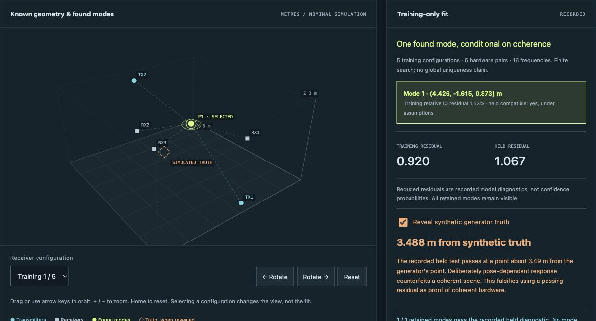

Phaseglass Quantum
A two-copy quantum measurement distinguishes states whose whole-block purity statistics are identical.
Read the study ↗Open the experiment. Inspect the result.

Papers on quantum measurements, numerical methods, sensing, and agent testing.
A two-copy quantum measurement distinguishes states whose whole-block purity statistics are identical.
Read the study ↗The best encoding for separated observers can be the worse encoding when their records are read together.
Read the study ↗A rigid-body engine tests whether agreement across simulation refinements makes a contact derivative trustworthy.
Read the study ↗12 research projects · 14 PDFs + 1 technical report · October–November 2026